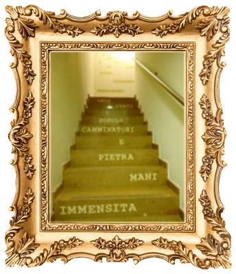

ESCALES
Quan heu pujat i baixat aquesta escala, us haureu fixat que està plena de paraules, unes paraules que volen connectar l’obra del pintor amb els versos del poemari d’Erri de Luca, Solo Andata.
Hem treballat els poemes i ens ha impactat la força i duresa de les seves paraules, com és forta i de vegades dura l’experiència de migrar.
Ens ha agradat treballar per fer una obra col.lectiva fora de l’institut i en concret crear una instal.lació aprofitant els espais quotidians del museu i dotar-los de sentit propi.

